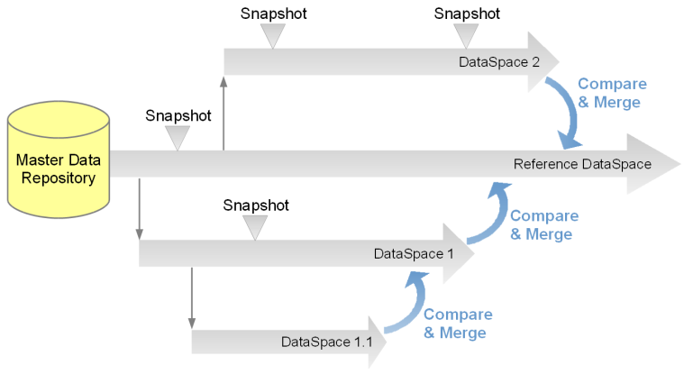
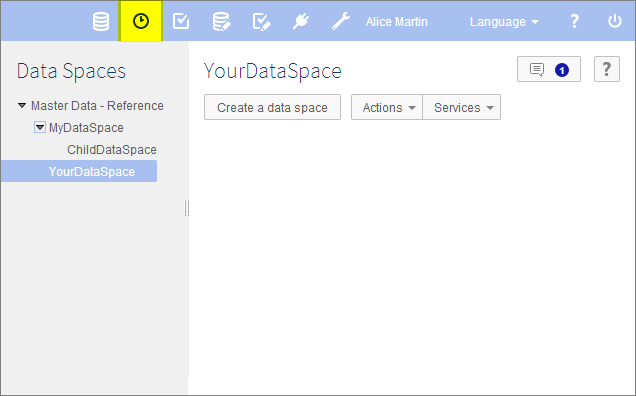

Introduction to data spaces
Section contents
Overview
What is a data space?
The life cycle of data can be complex. It may be necessary to manage a current version of data while working on several concurrent updates that will be integrated in the future, including keeping a trace of various states along the way. In EBX5, this is made possible through the use of data spaces and snapshots.
A data space is a container that isolates different versions of data sets and organizes them. A data space can be branched by creating a child data space, which is automatically initialized with the state of its parent. Thus, modifications can be made in isolation in the child data space without impacting its parent or any other data spaces. Once modifications in a child data space are complete, that data space can be compared with and merged back into the parent data space.
Snapshots, which are static, read-only captures of the state of a data space at a given point in time, can be taken for reference purposes. Snapshots can be used to revert the content of a data space later, if needed.

Basic concepts related to data spaces
A basic understanding of the following terms is beneficial when working with data spaces:
Using the Data Spaces area user interface
Data spaces can be created, accessed and modified in the Data Spaces area.
Note
This area is available only to authorized users in the 'Advanced perspective'.
The navigation pane displays all existing data spaces, while the workspace displays information about the selected data space and lists its snapshots.

See also
Related conceptsData sets
 User guide table of contents
User guide table of contents